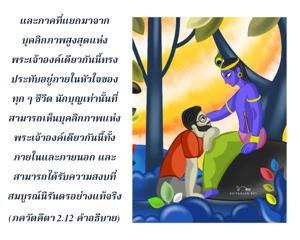
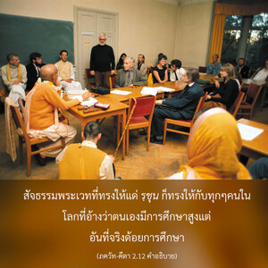
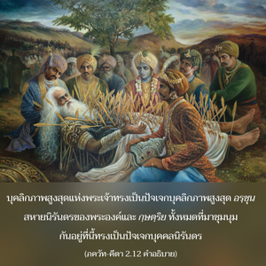
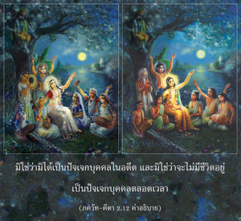

ไม่มีขณะใดเลยที่ตัวข้า ตัวเธอ หรือกษัตริย์ทั้งหลายเหล่านี้ไม่มีชีวิตอยู่ แม้ในอนาคตพวกเราทั้งหมดก็จะยังคงมีชีวิตอยู่




ในคัมภีร์พระเวท กฐ อุปนิษทฺ รวมทั้งใน เศฺวตาศฺวตร อุปนิษทฺ ได้กล่าวไว้ว่าบุคลิกภาพสูงสุดแห่งพระเจ้าทรงเป็นผู้ค้ำจุนสิ่งมีชีวิตจำนวนนับไม่ถ้วนตามสภาวะแห่งกรรม และผลกรรมของแต่ละชีวิต และภาคที่แยกมาจากบุคลิกภาพสูงสุดแห่งพระเจ้าองค์เดียวกันนี้ทรงประทับอยู่ภายในหัวใจของทุกๆชีวิต นักบุญเท่านั้นที่สามารถเห็นบุคลิกภาพแห่งพระเจ้าองค์เดียวกันนี้ทั้งภายในและภายนอก และสามารถได้รับความสงบที่สมบูรณ์นิรันดรอย่างแท้จริง
นิโตฺย นิตฺยานำ เจตนศฺ เจตนานามฺ
เอโก พหูนำ โย วิทธาติ กามานฺ
ตมฺ อาตฺม-สฺถํ เย ’นุปศฺยนฺติ ธีราสฺ
เตษำ ศานฺติห์ ศาศฺวตี เนตเรษามฺ
(กฐ อุปนิษทฺ 2.2.13)
สัจธรรมพระเวทที่ทรงให้แด่ อรฺชุน ก็ทรงให้กับทุกๆคนในโลกที่อ้างว่าตนเองมีการศึกษาสูงแต่อันที่จริงด้อยการศึกษา องค์ภควานฺตรัสอย่างชัดเจนว่า พระองค์เอง อรฺชุน และบรรดา กฺษตฺริย ทั้งหลายที่มาชุมนุมกัน ณ สมรภูมิแห่งนี้ แท้ที่จริงแล้วเป็นปัจเจกบุคคลนิรันดร องค์ภควานฺทรงเป็นผู้ค้ำจุนมวลปัจเจกชีวิตทั้งในสภาวะวัตถุและสภาวะหลุดพ้นแล้ว บุคลิกภาพสูงสุดแห่งพระเจ้าทรงเป็นปัจเจกบุคลิกภาพสูงสุด อรฺชุน สหายนิรันดรของพระองค์และ กฺษตฺริย ทั้งหมดที่มาชุมนุมกันอยู่ที่นี้ทรงเป็นปัจเจกบุคคลนิรันดร มิใช่ว่ามิได้เป็นปัจเจกบุคคลในอดีต และมิใช่ว่าจะไม่มีชีวิตอยู่เป็นปัจเจกบุคคลตลอดเวลา ความเป็นปัจเจกบุคคลมีอยู่ในอดีต และความเป็นปัจเจกบุคคลจะคงมีอยู่ต่อไปในอนาคตอย่างไม่หยุดยั้ง ดังนั้นจึงไม่มีเหตุผลที่จะต้องเศร้าโศกต่อผู้ใด
ทฤษฎีของ มายาวาที ที่ว่าหลังจากหลุดพ้นเป็นอิสรภาพแล้วปัจเจกวิญญาณจะถูกแยกออกจากการครอบงำของ มายา หรือความหลง จะกลืนหายเข้าไปใน พฺรหฺมนฺ อันไร้รูปลักษณ์ และสูญเสียความเป็นปัจเจกบุคคล องค์ศฺรีกฺฤษฺณผู้ที่เชื่อถือได้สูงสุดทรงไม่เห็นด้วย ณ ที่นี้ หรือทฤษฎีที่ว่าเราคิดถึงความเป็นปัจเจกบุคคลในเฉพาะสภาวะวัตถุเท่านั้นมิได้รับการยอมรับ องค์กฺฤษฺณทรงตรัสอย่างชัดเจนที่นี้ว่าในความเป็นปัจเจกบุคคลของพระองค์และทุกๆชีวิตจะคงอยู่ตลอดไปนิรันดรแม้อนาคตก็ตาม ดังที่ได้ยืนยันไว้ใน อุปนิษทฺ คำดำรัสเช่นนี้ขององค์กฤษฺณทรงเป็นที่เชื่อถือได้เพราะว่าองค์กฺฤษฺณทรงไม่ได้อยู่ภายใต้ความหลง หากความเป็นปัจเจกบุคคลไม่เป็นความจริงองค์กฺฤษฺณจะไม่ทรงเน้นมากเช่นนี้ แม้ในอนาคต มายาวาที อาจโต้เถียงว่าปัจเจกบุคคลที่องค์กฺฤษฺณตรัสมิใช่เป็นทิพย์แต่เป็นวัตถุ ถึงแม้ว่าเรายอมรับข้อโต้เถียงว่าปัจเจกบุคคลเป็นวัตถุ แล้วเราจะแยกความเป็นปัจเจกบุคคลขององค์กฺฤษฺณได้อย่างไร องค์กฺฤษฺณทรงยืนยันความเป็นปัจเจกบุคคลของพระองค์ในอดีต และทรงยืนยันความเป็นปัจเจกบุคคลของพระองค์ในอนาคตเช่นเดียวกัน พระองค์ทรงยืนยันความเป็นปัจเจกบุคคลของพระองค์ในหลายๆทาง และ พฺรหฺมนฺ อันไร้รูปลักษณ์ได้อธิบายไว้ว่าเป็นรองลงมาจากพระองค์ องค์กฺฤษฺณทรงอนุรักษ์ความเป็นปัจเจกทิพย์เรื่อยมา ถ้าหากว่าเรายอมรับพระองค์ว่าทรงเป็นพันธวิญญาณธรรมดาในปัจเจกจิตสำนึก ภควัท-คีตา ของพระองค์ก็จะไม่มีคุณค่าว่าเป็นพระคัมภีร์ที่เชื่อถือได้ บุคคลธรรมดาผู้มีจุดอ่อนที่บกพร่องสี่ประการของมนุษย์จะไม่สามารถสอนสิ่งที่ควรค่าแก่การสดับฟังได้ คีตา อยู่เหนือวรรณกรรมเช่นนี้จึงไม่มีหนังสือใดๆทางโลกเปรียบเทียบกับ ภควัท-คีตา ได้ เมื่อเรายอมรับว่าองค์กฺฤษฺณทรงเป็นบุคคลธรรมดา คีตา จะสูญเสียความสำคัญโดยสิ้นเชิง พวก มายาวาที อาจเถียงว่าความหลากหลายบุคลิกภาพที่ได้กล่าวไว้ในโศลกนี้เป็นไปตามประเพณีนิยมและหมายถึงร่างกาย แต่โศลกก่อนหน้านี้แนวคิดทางร่างกายเช่นนี้ได้ถูกตำหนิไว้แล้ว หลังจากการตำหนิแนวคิดทางร่างกายของสิ่งมีชีวิตไปแล้ว จะเป็นไปได้อย่างไรที่องค์กฺฤษฺณจะทรงเสนอแนะเกี่ยวกับร่างกายตามประเพณีนิยมอีก ฉะนั้นความเป็นปัจเจกบุคคลจะคงอนุรักษ์ไว้บนพื้นฐานความเป็นทิพย์และได้รับการยืนยันไว้โดย อาจารฺย ผู้ยิ่งใหญ่ เช่น ศฺรี รามานุช และท่านอื่นๆได้กล่าวไว้อย่างชัดเจนหลายแห่งใน คีตา ว่า สาวกขององค์ภควานฺเท่านั้นที่จะสามารถเข้าใจปัจเจกบุคคลทิพย์ได้ ผู้ที่อิจฉาองค์กฺฤษฺณว่าทรงเป็นบุคลิกภาพสูงสุดแห่งพระเจ้าจะไม่มีหนทางเข้าถึงวรรณกรรมอันยิ่งใหญ่ที่เชื่อถือได้นี้ การเข้าหาหลักธรรม คีตา ของผู้ไม่ใช่สาวกคล้ายกับผึ้งที่ไปเลียอยู่ที่ขวดน้ำผึ้ง เราไม่สามารถลิ้มรสน้ำผึ้งได้นอกจากเราจะเปิดขวดมาชิม ในลักษณะเดียวกันความเร้นลับของ ภควัท-คีตา ก็สามารถที่จะเข้าใจได้โดยสาวกเท่านั้น ไม่มีผู้อื่นสามารถลิ้มรสได้ ดังที่ได้กล่าวไว้ในบทที่สี่ของ คีตา ว่าผู้ที่อิจฉาความเป็นอยู่ขององค์ภควานฺจะไม่สามารถแตะต้อง คีตา ได้ ฉะนั้นคำอธิบาย คีตา ของพวก มายาวาที เป็นการให้ข้อมูลที่ผิดไปจากความเป็นจริงทั้งหมด องค์ ไจตนฺย ทรงห้ามเราไม่ให้อ่านคำอธิบายที่เขียนโดย มายาวาที และทรงเตือนเราว่าผู้ที่รับเอาแนวคิดของปรัชญา มายาวาที จะสูญเสียพลังอำนาจทั้งหมดในการเข้าใจความเร้นลับอันแท้จริงของ คีตา หากปัจเจกบุคคล หมายถึงจักรวาลแห่งทฤษฏี คำสั่งสอนขององค์ภควานฺก็ไม่มีความจำเป็น ความหลากหลายบุคลิกภาพของปัจเจกวิญญาณ และองค์ภควานฺเป็นความจริงอมตะ และคัมภีร์พระเวทได้ยืนยันไว้ดังที่ได้กล่าวมาแล้ว